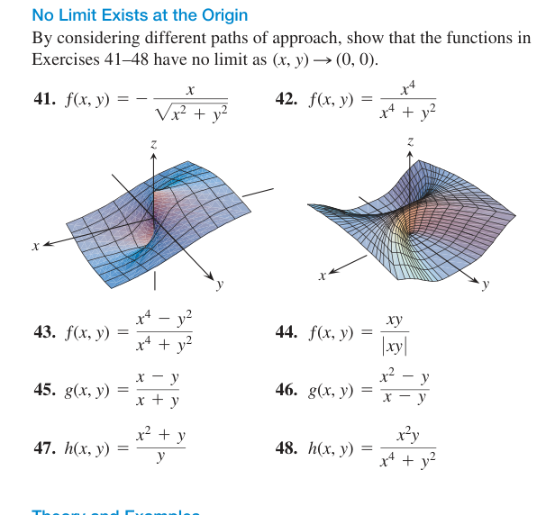
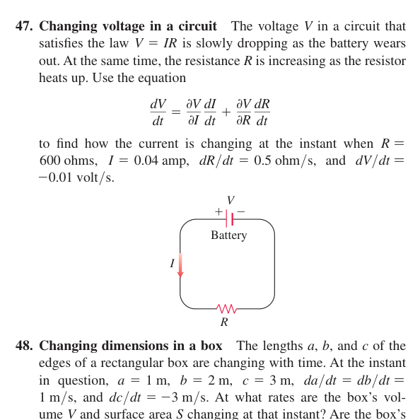
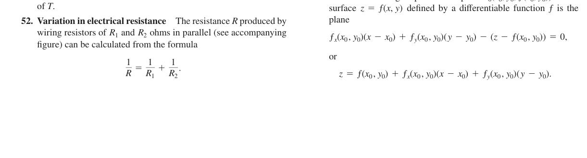
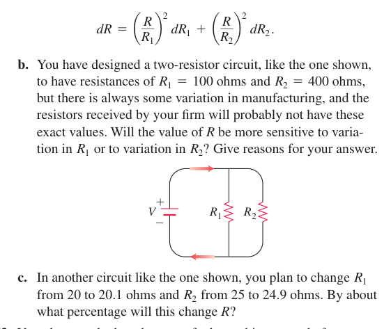

??? Chapter 13 ???????
? Homework-chpater 13(2).pdf ?????????? MathJax ??????????????????????????
13.2
13.2 #9
?????????????
\[\frac{e^y\sin x}{x}=e^y\cdot \frac{\sin x}{x}.\]? \((x,y)\to(0,0)\) ??\(e^y\to1\)????????? \(\sin x/x\to1\)?
13.2 #13
????????
\[x^2-2xy+y^2=(x-y)^2.\]?????? \(x\ne y\)???????? \(x-y\)?
\[\frac{(x-y)^2}{x-y}=x-y.\]?????? \((1,1)\)?
13.2 #23
????????
\[x^3+y^3=(x+y)(x^2-xy+y^2).\]?? \(x+y\) ?????
\[x^2-xy+y^2\to 1^2-1(-1)+(-1)^2=3.\]13.2 #41

????????? \((x,y)\to(0,0)\) ???????
? \(y=0\) ??????
\[f(x,0)=-\frac{x}{|x|}.\]? \(x\to0^+\)??? \(-1\)?? \(x\to0^-\)??? \(1\)??????????????????????
13.2 #44
????????? \((x,y)\to(0,0)\) ???????
?????? \(y=x\), \(x>0\)?
\[\frac{x^2}{|x^2|}=1.\]?????? \(y=-x\), \(x>0\)?
\[\frac{-x^2}{|-x^2|}=-1.\]????????????????????
13.2 #49
???????
????? \(x=1\)?
\[\frac{y^2-1}{y-1}=y+1\to2.\]????? \(x=1/y^2\)????????? \((1,1)\)????? 0?
\[\frac{(1/y^2)y^2-1}{y-1}=0\to0.\]?????????
13.2 #67
? \((x,y)\to(0,0)\) ???????????
? \(y=0\)?
\[f(x,0)=0.\]? \(x=0\)?
\[f(0,y)=1.\]?????????????????
13.2 #73
???? \(\delta>0\)?? \(\sqrt{x^2+y^2}<\delta\Rightarrow |f(x,y)-f(0,0)|<\varepsilon\)?
? \(r=\sqrt{x^2+y^2}\)??? \(f(0,0)=0\)?
\[|f(x,y)-f(0,0)|=x^2+y^2=r^2.\]?? \(r<\delta\)??? \(r^2<\delta^2\)?????? \(0.01\)??
\[\delta=0.1.\]13.2 #74
?? \(x^2+1\ge1\)???
\[\left|\frac{y}{x^2+1}\right|\le |y|\le \sqrt{x^2+y^2}.\]?? \(\delta=0.05\)?? \(\sqrt{x^2+y^2}<\delta\) ????? \(|f(x,y)-0|<0.05\)?
13.2 #75
????? 1???
\[|f(x,y)|\le |x+y|\le |x|+|y|\le \sqrt2\sqrt{x^2+y^2}.\]?????? \(0.01\)??
\[\delta=\frac{0.01}{\sqrt2}.\]13.2 #77
???????????? \(|x|\)?
\[\left|\frac{xy^2}{x^2+y^2}\right|=|x|\frac{y^2}{x^2+y^2}\le |x|\le \sqrt{x^2+y^2}.\]??? \(\delta=0.04\) ???
13.3
13.3 #14
? \(f_x\) ? \(f_y\)?
? \(x\) ?????\(e^{-x}\) ? \(\sin(x+y)\) ?? \(x\)?????????
\[f_x=-e^{-x}\sin(x+y)+e^{-x}\cos(x+y).\]? \(y\) ?????\(e^{-x}\) ????
\[f_y=e^{-x}\cos(x+y).\]13.3 #18
? \(f_x\) ? \(f_y\)?
? \(u=3x-y^2\)?? \(f=\cos^2u\)????????
\[\frac{d}{du}\cos^2u=-2\sin u\cos u.\]???????
\[f_x=-2\sin u\cos u\cdot3=-6\sin u\cos u,\] \[f_y=-2\sin u\cos u\cdot(-2y)=4y\sin u\cos u.\]13.3 #51
????????
?????
\[f_x=2xy^3-4x^3,\quad f_y=3x^2y^2+5y^4.\]???? \(x,y\) ???
\[f_{xx}=2y^3-12x^2,\quad f_{xy}=6xy^2,\] \[f_{yx}=6xy^2,\quad f_{yy}=6x^2y+20y^3.\]13.3 #54
????????
? \(a=x/y^2\)??????
\[z_x=e^a\left(1+\frac{x}{y^2}\right),\quad z_y=-\frac{2x^2}{y^3}e^a.\]????
\[z_{xx}=e^a\left(\frac{2}{y^2}+\frac{x}{y^4}\right),\] \[z_{xy}=z_{yx}=e^a\left(-\frac{4x}{y^3}-\frac{2x^2}{y^5}\right),\] \[z_{yy}=e^a\left(\frac{6x^2}{y^4}+\frac{4x^3}{y^6}\right).\]13.3 #56
?? \(w_{xy}=w_{yx}\)?
?? \(w_x\)?
\[w_x=e^x+\ln y+\frac{y}{x}.\]?? \(y\) ???
\[w_{xy}=\frac1y+\frac1x.\]????? \(w_y\)?
\[w_y=\frac{x}{y}+\ln x.\]?? \(x\) ???
\[w_{yx}=\frac1y+\frac1x.\]13.3 #70
???? \(x\) ??? \(y,z\) ?????? \((1,-1,-3)\) ? \(\partial x/\partial z\)?
? \(F(x,y,z)=xz+y\ln x-x^2+4\)???????
\[x_z=-\frac{F_z}{F_x}.\]??
\[F_z=x,\quad F_x=z+\frac{y}{x}-2x.\]? \((1,-1,-3)\)?
\[F_z=1,\quad F_x=-3-1-2=-6.\] \[x_z=-\frac1{-6}=\frac16.\]13.3 #75
???? \((2,-1)\) ??? (a) \(x=2\)?(b) \(y=-1\) ?????????
??? \(z=f(x,y)\)???? \(x=2\) ???? \(y\) ??????? \(f_y\)???? \(y=-1\) ???? \(x\) ??????? \(f_x\)?
\[f_x=2,\quad f_y=3.\]13.3 #85
????? Laplace equation?
?? Laplace equation ?
\[f_{xx}+f_{yy}=0.\]???
\[f_x=-2e^{-2y}\sin2x,\quad f_{xx}=-4e^{-2y}\cos2x,\] \[f_y=-2e^{-2y}\cos2x,\quad f_{yy}=4e^{-2y}\cos2x.\]???? 0?
13.4
13.4 #2
?????????????? \(dw/dt\)?
?????
\[w=(\cos t+\sin t)^2+(\cos t-\sin t)^2=2.\]?? \(dw/dt=0\)?????????????
\[\frac{dw}{dt}=2x\frac{dx}{dt}+2y\frac{dy}{dt}.\]?? \(x,y,x',y'\) ???????
13.4 #5
???? \(w\) ?? \(t\)?
\[w(t)=2(\tan^{-1}t)(t^2+1)-t.\]???
\[w'(t)=2\left(\frac{1}{1+t^2}(t^2+1)+(\tan^{-1}t)(2t)\right)-1=1+4t\tan^{-1}t.\]?? \(t=1\)?
\[1+4\cdot1\cdot\frac\pi4=1+\pi.\]13.4 #9
? \(w_u,w_v\)?
???????
\[w=(u+v)(u-v)+(u-v)uv+(u+v)uv=u^2-v^2+2u^2v.\]??
\[w_u=2u+4uv,\quad w_v=-2v+2u^2.\]? \((u,v)=(1/2,1)\)?
\[w_u=3,\quad w_v=-\frac32.\]13.4 #11
? \((x,y,z)=(\sqrt3,2,1)\) ? \(u_x,u_y,u_z\)?
?? \(u\) ???? \(x,y,z\)?
\[p-q=2y,\quad q-r=2(z-y),\quad u=\frac{y}{z-y}.\]??
\[u_x=0,\quad u_y=\frac{z}{(z-y)^2},\quad u_z=-\frac{y}{(z-y)^2}.\]?? \((\sqrt3,2,1)\)?? \(z-y=-1\)?
13.4 #26
? \(dy/dx\)?
? \(F(x,y)=xy+y^2-3x-3\)???????
\[\frac{dy}{dx}=-\frac{F_x}{F_y}.\]??
\[F_x=y-3,\quad F_y=x+2y.\]? \((-1,1)\)?
\[\frac{dy}{dx}=-\frac{-2}{1}=2.\]13.4 #31
? \(z_x,z_y\)?
? \(F=z^3-xy+yz+y^3-2\)?
\[z_x=-\frac{F_x}{F_z},\quad z_y=-\frac{F_y}{F_z}.\]???
\[F_x=-y,\quad F_y=-x+z+3y^2,\quad F_z=3z^2+y.\]? \((1,1,1)\)?
\[F_x=-1,\quad F_y=3,\quad F_z=4.\]13.4 #33
? \(z_x,z_y\)?
? \(F=\sin(x+y)+\sin(y+z)+\sin(x+z)\)?
\[F_x=\cos(x+y)+\cos(x+z),\] \[F_y=\cos(x+y)+\cos(y+z),\] \[F_z=\cos(y+z)+\cos(x+z).\]? \((\pi,\pi,\pi)\)??? \(\cos(2\pi)=1\)????????? 2?
\[z_x=-\frac{F_x}{F_z}=-1,\quad z_y=-\frac{F_y}{F_z}=-1.\]13.4 #47

? \(dI/dt\)?
? \(V=IR\) ???
\[\frac{dV}{dt}=R\frac{dI}{dt}+I\frac{dR}{dt}.\]?????
\[-0.01=600\frac{dI}{dt}+0.04(0.5).\] \[-0.01=600\frac{dI}{dt}+0.02.\] \[600\frac{dI}{dt}=-0.03.\]13.4 #55
??????/??????? \(T=4x^2-4xy+4y^2\)????????
?????
\[\frac{dT}{dt}=T_x(-\sin t)+T_y(\cos t).\]?? \(x=\cos t,y=\sin t\)?
\[\frac{dT}{dt}=4(\sin^2t-\cos^2t)=-4\cos2t.\]???? \(t=\pi/4,3\pi/4,5\pi/4,7\pi/4\)????? \(8\sin2t\)???????????
? \(T=4x^2-4xy+4y^2=4-4xy\)???? \(xy=1/2\) ??????? \(xy=-1/2\) ????
13.4 #58
? \(t=2\) ??? \(z\) ?????
?????
\[\frac{dz}{dt}=2x\frac{dx}{dt}-2y\frac{dy}{dt}.\]?? \(t=2\)?
\[\frac{dz}{dt}=2(4)(-1)-2(-2)(-3)=-8-12=-20.\]13.5
13.5 #12
??????
???????
\[u=\frac{(3,-4)}{5}=\left(\frac35,-\frac45\right).\]???
\[\nabla f=(4x,2y),\quad \nabla f(-1,1)=(-4,2).\]????????
\[D_u f=(-4,2)\cdot\left(\frac35,-\frac45\right)=-4.\]13.5 #15
???
\[\nabla f=(y+z,x+z,x+y).\]? \(P_0\)?
\[\nabla f(1,-1,2)=(1,3,0).\]?????? \(\sqrt{3^2+6^2+(-2)^2}=7\)???
\[u=\left(\frac37,\frac67,-\frac27\right).\] \[D_u f=(1,3,0)\cdot u=\frac{21}{7}=3.\]13.5 #19
?????/??????????
????????????
\[\nabla f=(2x+y,x+2y),\quad \nabla f(-1,1)=(-1,1).\]?????
\[u_{\max}=\frac{(-1,1)}{\sqrt2}.\]??????????? \(\sqrt2\)?????????????????? \(-\sqrt2\)?
13.5 #23
?????/??????????
????
\[f=2\ln x+2\ln y+2\ln z.\]??
\[\nabla f=\left(\frac2x,\frac2y,\frac2z\right),\quad \nabla f(1,1,1)=(2,2,2).\]????? \(2\sqrt3\)?
13.5 #25
?????????
? \(F=x^2+y^2\)??? \(\nabla F=(2x,2y)\) ?????
\[\nabla F(\sqrt2,\sqrt2)=(2\sqrt2,2\sqrt2).\]????
\[2\sqrt2(x-\sqrt2)+2\sqrt2(y-\sqrt2)=0.\]13.5 #28
?????????
? \(F=x^2-xy+y^2\)?
\[\nabla F=(2x-y,-x+2y).\]? \((-1,2)\)?
\[\nabla F=(-4,5).\]?????
\[-4(x+1)+5(y-2)=0.\]13.5 #34
????????????? \(-3\,^{\circ}\mathrm C/\mathrm m\)?
??????????
\[-\|\nabla T\|\le D_uT\le \|\nabla T\|.\]???
\[\nabla T=(2y,2x-z,-y).\]? \((1,-1,1)\)?
\[\nabla T=(-2,1,1),\quad \|\nabla T\|=\sqrt6.\]?? \(\sqrt6\approx2.45<3\)???????? \(-3\)?
13.6
13.6 #4
????????
? \(F=x^2+2xy-y^2+z^2-7\)?
\[\nabla F=(2x+2y,2x-2y,2z).\]? \(P_0\)?
\[\nabla F(1,-1,3)=(0,4,6).\]????
\[0(x-1)+4(y+1)+6(z-3)=0.\]????????????
13.6 #15
?????????????
? \(F=x+y^2+2z-4\)?\(G=x-1\)????????????????????
\[\nabla F\times \nabla G.\]? \(P\)?
\[\nabla F=(1,2,2),\quad \nabla G=(1,0,0).\] \[\nabla F\times\nabla G=(0,2,-2).\]13.6 #21
?? \(P_0=(3,4,12)\) ? \(3i+6j-2k\) ???? \(ds=0.1\)??? \(f\) ?????
??????
\[df\approx \nabla f(P_0)\cdot u\,ds.\]?? \(f=\ln r\)?
\[\nabla f=\frac{(x,y,z)}{x^2+y^2+z^2}.\]? \((3,4,12)\)???? \(169\)??? \(\nabla f=(3,4,12)/169\)????????
\[u=\frac{(3,6,-2)}7.\]???
\[\nabla f\cdot u=\frac{9+24-24}{169\cdot7}=\frac9{1183}.\]?? \(ds=0.1\)?
13.6 #26
??? \(P=(8,6,-4)\) ???????????????
?????\(2t^2=8\Rightarrow t=2\)?
\[\nabla T=(4x-yz,-xz,-xy).\]? \((8,6,-4)\)?
\[\nabla T=(56,32,-48).\]????
\[r'(t)=(4t,3,-2t),\quad r'(2)=(8,3,-4).\]??????
\[\nabla T\cdot r'(2)=56(8)+32(3)-48(-4)=736.\]??? \(\|r'(2)\|=\sqrt{89}\)?????????? \(736/\sqrt{89}\)?
13.6 #52


? (a)(b)(c)?
(a) ? \(R=\dfrac{R_1R_2}{R_1+R_2}\)???
\[\frac{\partial R}{\partial R_1}=\left(\frac{R}{R_1}\right)^2,\quad \frac{\partial R}{\partial R_2}=\left(\frac{R}{R_2}\right)^2.\]??
\[dR=\left(\frac{R}{R_1}\right)^2dR_1+\left(\frac{R}{R_2}\right)^2dR_2.\](b) ? \(R_1=100,R_2=400\)?\(R=80\)???????
\[\left(\frac{80}{100}\right)^2=0.64,\quad \left(\frac{80}{400}\right)^2=0.04.\]??? \(R_1\) ????
(c) ? \(R_1=20,R_2=25\)?\(R=100/9\)?? \(dR_1=0.1,dR_2=-0.1\)?
\[dR=\left(\frac{5}{9}\right)^2(0.1)+\left(\frac{4}{9}\right)^2(-0.1)=\frac1{90}.\]??????
\[\frac{dR}{R}=\frac{1/90}{100/9}=0.001=0.1\%.\]13.7
13.7 #3
? local maxima, local minima, saddle points?
??????? 0?
\[f_x=2x+y+3=0,\quad f_y=x+2=0.\]???? \(x=-2\)???? \(y=1\)?
?????
\[f_{xx}=2,\quad f_{yy}=0,\quad f_{xy}=1.\] \[D=f_{xx}f_{yy}-f_{xy}^2=2\cdot0-1=-1<0.\]13.7 #35
??? \(0\le x\le5,\ -3\le y\le0\) ????????
??????
\[T_x=2x+y-6=0,\quad T_y=x+2y=0.\]?? \((x,y)=(4,-2)\)??
\[T(4,-2)=-10.\]?????
\[x=0:\ T=y^2+2\Rightarrow 2\le T\le11.\] \[x=5:\ T=y^2+5y-3\Rightarrow \text{?? }-37/4.\] \[y=-3:\ T=x^2-9x+11\Rightarrow \text{?? }-37/4.\] \[y=0:\ T=x^2-6x+2\Rightarrow \text{?? }-7.\]????????
13.7 #38
???????? \(x=0,y=0,x+y=1\) ?????????
??????
\[f_x=4-8y=0\Rightarrow y=\frac12,\quad f_y=-8x+2=0\Rightarrow x=\frac14.\]Hessian ??? \(D=0\cdot0-(-8)^2<0\)?? saddle??????????
???
\[y=0:\ f=4x+1\Rightarrow 1\le f\le5.\] \[x=0:\ f=2y+1\Rightarrow 1\le f\le3.\] \[x+y=1:\ f=8x^2-6x+3,\quad 0\le x\le1.\]??????? \(x=3/8\)?? \(15/8\)????? 3 ? 5?
13.7 #41
???????????
??????
\[T_x=2x-1=0,\quad T_y=4y=0\Rightarrow (x,y)=\left(\frac12,0\right).\] \[T\left(\frac12,0\right)=-\frac14.\]?? \(x^2+y^2=1\)?
\[T=x^2+2(1-x^2)-x=2-x^2-x.\]? \([-1,1]\) ???????? \(x=-1/2\)?? \(9/4\)??? \(y=\pm\sqrt3/2\)???????????? \(-1/4\)?
13.7 #50
??????? \(x+2y-z=0\) ?????
?????
\[d=\frac{|x+2y-z|}{\sqrt6}.\]?? \(z=x^2+y^2+10\)?
\[x+2y-z=x+2y-x^2-y^2-10.\]???????????????
\[q=x+2y-x^2-y^2-10.\]????????? 0?
\[q_x=1-2x=0\Rightarrow x=\frac12,\quad q_y=2-2y=0\Rightarrow y=1.\]??
\[z=\left(\frac12\right)^2+1^2+10=\frac{45}{4}.\]13.7 #51
????????????
????????????????????? \(n=(3,2,1)\)???? \(tn\)?
\[3(3t)+2(2t)+1(t)=14t=6.\] \[t=\frac37.\]????
\[\frac37(3,2,1)=\left(\frac97,\frac67,\frac37\right).\]13.7 #58
????? \(27\text{ cm}^3\) ?????????????????
??? \(x,y,z>0\)??? \(xyz=27\)????
\[S=2(xy+xz+yz).\]????????????????????? AM-GM ? Lagrange multiplier ??
\[x=y=z=3.\]??
\[S=6(3^2)=54.\]13.8
13.8 #2
?????????
? Lagrange multiplier?
\[\nabla f=(y,x),\quad \nabla g=(2x,2y).\] \[y=2\lambda x,\quad x=2\lambda y.\]???? \(x^2=y^2\)??? \(x=\pm y\)?????
\[2x^2=10\Rightarrow x=\pm\sqrt5.\]??? \(xy=5\)???? \(xy=-5\)?
13.8 #3
?????
??? \(49-x^2-y^2\) ????????? \(x^2+y^2\)??????????????
????? \((1,3)\)????
\[\frac{10}{1^2+3^2}(1,3)=(1,3).\]???
\[f(1,3)=49-1-9=39.\]13.8 #13
????????
\[(x-1)^2+(y-2)^2=5.\]???? \((1,2)\)??? \(\sqrt5\) ???????????? \(\sqrt5\)?????????
???????? \((0,0)\)?? \(x^2+y^2=0\)??????????????????????? \((2,4)\)?????? \(20\)?
13.8 #29
?????
??? \(g=4x^2+y^2+4z^2-16=0\)?Lagrange equations?
\[(16x,4z,4y-16)=\lambda(8x,2y,8z).\]? \(x\ne0\)????? \(\lambda=2\)???
\[2z=\lambda y=2y\Rightarrow z=y,\] \[y-4=2\lambda z=4z.\]?? \(y=z=-4/3\)??????
\[4x^2+\frac{16}{9}+4\cdot\frac{16}{9}=16\Rightarrow x=\pm\frac43.\]?? \(x=0\) ????????????????????
13.8 #30
??????????
???? 400 ?????????/??? \(xyz^2\)?????????\(|x|\) ? \(|y|\) ????
? \(s=x^2+y^2\)????? \(s\) ? \(|xy|\le s/2\)?? \(z^2=1-s\)???
\[|xyz^2|\le \frac{s}{2}(1-s).\]??? \(\frac{s}{2}(1-s)\)?
\[\frac{d}{ds}\left(\frac{s-s^2}{2}\right)=\frac{1-2s}{2}=0\Rightarrow s=\frac12.\]?? \(z^2=1/2\)?? \(x^2=y^2=1/4\)?
13.8 #39
???? \(y+2z=12\)?\(x+y=6\) ???????????
? \(z=t\)??
\[y=12-2t,\quad x=6-y=2t-6.\]?????
\[D(t)=(2t-6)^2+(12-2t)^2+t^2=9t^2-72t+180.\]???
\[D'(t)=18t-72=0\Rightarrow t=4.\]??
\[z=4,\quad y=4,\quad x=2.\]13.8 #44
??? \(2y+4z=5\) ??? \(z^2=4x^2+4y^2\) ???????????
????
\[x^2+y^2=\frac{z^2}{4}.\]????
\[D=x^2+y^2+z^2=\frac54z^2.\]??????????????? \(|z|\) ???????
\[y=\frac{5-4z}{2}.\]???? \(x\)???
\[y^2\le\frac{z^2}{4}.\] \[\left(\frac{5-4z}{2}\right)^2\le\frac{z^2}{4}\Rightarrow (5-4z)^2\le z^2.\]?? \(1\le z\le5/3\)???? \(z=1\)??? \(y=1/2\)?? \(x=0\)?